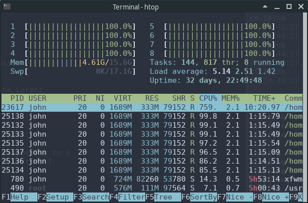

Wealth Distribution Dynamics in MyST¶
2021 年 11 月 22 日 | 4 min read
注解
目录
In addition to what’s in Anaconda, this lecture will need the following libraries:
Overview¶
This notebook gives an introduction to wealth distribution dynamics, with a focus on
modeling and computing the wealth distribution via simulation,
measures of inequality such as the Lorenz curve and Gini coefficient, and
how inequality is affected by the properties of wage income and returns on assets.
The wealth distribution in many countries exhibits a Pareto tail
See this lecture for a definition.
For a review of the empirical evidence, see, for example, [mdBB18].
A Note on Assumptions¶
The evolution of wealth for any given household depends on their savings behavior.
We will use the following imports.
import numpy as np
import matplotlib.pyplot as plt
%matplotlib inline
import quantecon as qe
from numba import njit, jitclass, float64, prange
Lorenz Curves and the Gini Coefficient¶
Before we investigate wealth dynamics, we briefly review some measures of inequality.
Lorenz Curves¶
One popular graphical measure of inequality is the Lorenz curve.
The package QuantEcon.py, already imported above, contains a function to compute Lorenz curves.
To illustrate, suppose that
n = 10_000 # size of sample
w = np.exp(np.random.randn(n)) # lognormal draws
is data representing the wealth of 10,000 households.
We can compute and plot the Lorenz curve as follows:
f_vals, l_vals = qe.lorenz_curve(w)
fig, ax = plt.subplots()
ax.plot(f_vals, l_vals, label='Lorenz curve, lognormal sample')
ax.plot(f_vals, f_vals, label='Lorenz curve, equality')
ax.legend()
plt.show()
This curve can be understood as follows: if point \((x,y)\) lies on the curve, it means that, collectively, the bottom \((100x)\%\) of the population holds \((100y)\%\) of the wealth.
a_vals = (1, 2, 5) # Pareto tail index
n = 10_000 # size of each sample
fig, ax = plt.subplots()
for a in a_vals:
u = np.random.uniform(size=n)
y = u**(-1/a) # distributed as Pareto with tail index a
f_vals, l_vals = qe.lorenz_curve(y)
ax.plot(f_vals, l_vals, label=f'$a = {a}$')
ax.plot(f_vals, f_vals, label='equality')
ax.legend()
plt.show()
You can see that, as the tail parameter of the Pareto distribution increases, inequality decreases.
This is to be expected, because a higher tail index implies less weight in the tail of the Pareto distribution.
The Gini Coefficient¶
The definition and interpretation of the Gini coefficient can be found on the corresponding Wikipedia page.
A value of 0 indicates perfect equality (corresponding the case where the Lorenz curve matches the 45 degree line) and a value of 1 indicates complete inequality (all wealth held by the richest household).
The QuantEcon.py library contains a function to calculate the Gini coefficient.
We can test it on the Weibull distribution with parameter \(a\), where the Gini coefficient is known to be
Let’s see if the Gini coefficient computed from a simulated sample matches this at each fixed value of \(a\).
a_vals = range(1, 20)
ginis = []
ginis_theoretical = []
n = 100
fig, ax = plt.subplots()
for a in a_vals:
y = np.random.weibull(a, size=n)
ginis.append(qe.gini_coefficient(y))
ginis_theoretical.append(1 - 2**(-1/a))
ax.plot(a_vals, ginis, label='estimated gini coefficient')
ax.plot(a_vals, ginis_theoretical, label='theoretical gini coefficient')
ax.legend()
ax.set_xlabel("Weibull parameter $a$")
ax.set_ylabel("Gini coefficient")
plt.show()
The simulation shows that the fit is good.
A Model of Wealth Dynamics¶
Having discussed inequality measures, let us now turn to wealth dynamics.
The model we will study is
where
\(w_t\) is wealth at time \(t\) for a given household,
\(r_t\) is the rate of return of financial assets,
\(y_t\) is current non-financial (e.g., labor) income and
\(s(w_t)\) is current wealth net of consumption
Letting \(\{z_t\}\) be a correlated state process of the form
we’ll assume that
and
Here \(\{ (\epsilon_t, \xi_t, \zeta_t) \}\) is IID and standard normal in \(\mathbb R^3\).
where \(s_0\) is a positive constant.
Implementation¶
Here’s some type information to help Numba.
wealth_dynamics_data = [
('w_hat', float64), # savings parameter
('s_0', float64), # savings parameter
('c_y', float64), # labor income parameter
('μ_y', float64), # labor income paraemter
('σ_y', float64), # labor income parameter
('c_r', float64), # rate of return parameter
('μ_r', float64), # rate of return parameter
('σ_r', float64), # rate of return parameter
('a', float64), # aggregate shock parameter
('b', float64), # aggregate shock parameter
('σ_z', float64), # aggregate shock parameter
('z_mean', float64), # mean of z process
('z_var', float64), # variance of z process
('y_mean', float64), # mean of y process
('R_mean', float64) # mean of R process
]
Here’s a class that stores instance data and implements methods that update the aggregate state and household wealth.
@jitclass(wealth_dynamics_data)
class WealthDynamics:
def __init__(self,
w_hat=1.0,
s_0=0.75,
c_y=1.0,
μ_y=1.0,
σ_y=0.2,
c_r=0.05,
μ_r=0.1,
σ_r=0.5,
a=0.5,
b=0.0,
σ_z=0.1):
self.w_hat, self.s_0 = w_hat, s_0
self.c_y, self.μ_y, self.σ_y = c_y, μ_y, σ_y
self.c_r, self.μ_r, self.σ_r = c_r, μ_r, σ_r
self.a, self.b, self.σ_z = a, b, σ_z
# Record stationary moments
self.z_mean = b / (1 - a)
self.z_var = σ_z**2 / (1 - a**2)
exp_z_mean = np.exp(self.z_mean + self.z_var / 2)
self.R_mean = c_r * exp_z_mean + np.exp(μ_r + σ_r**2 / 2)
self.y_mean = c_y * exp_z_mean + np.exp(μ_y + σ_y**2 / 2)
# Test a stability condition that ensures wealth does not diverge
# to infinity.
α = self.R_mean * self.s_0
if α >= 1:
raise ValueError("Stability condition failed.")
def parameters(self):
"""
Collect and return parameters.
"""
parameters = (self.w_hat, self.s_0,
self.c_y, self.μ_y, self.σ_y,
self.c_r, self.μ_r, self.σ_r,
self.a, self.b, self.σ_z)
return parameters
def update_states(self, w, z):
"""
Update one period, given current wealth w and persistent
state z.
"""
# Simplify names
params = self.parameters()
w_hat, s_0, c_y, μ_y, σ_y, c_r, μ_r, σ_r, a, b, σ_z = params
zp = a * z + b + σ_z * np.random.randn()
# Update wealth
y = c_y * np.exp(zp) + np.exp(μ_y + σ_y * np.random.randn())
wp = y
if w >= w_hat:
R = c_r * np.exp(zp) + np.exp(μ_r + σ_r * np.random.randn())
wp += R * s_0 * w
return wp, zp
Here’s function to simulate the time series of wealth for in individual households.
@njit
def wealth_time_series(wdy, w_0, n):
"""
Generate a single time series of length n for wealth given
initial value w_0.
The initial persistent state z_0 for each household is drawn from
the stationary distribution of the AR(1) process.
* wdy: an instance of WealthDynamics
* w_0: scalar
* n: int
"""
z = wdy.z_mean + np.sqrt(wdy.z_var) * np.random.randn()
w = np.empty(n)
w[0] = w_0
for t in range(n-1):
w[t+1], z = wdy.update_states(w[t], z)
return w
Now here’s function to simulate a cross section of households forward in time.
Note the use of parallelization to speed up computation.
@njit(parallel=True)
def update_cross_section(wdy, w_distribution, shift_length=500):
"""
Shifts a cross-section of household forward in time
* wdy: an instance of WealthDynamics
* w_distribution: array_like, represents current cross-section
Takes a current distribution of wealth values as w_distribution
and updates each w_t in w_distribution to w_{t+j}, where
j = shift_length.
Returns the new distribution.
"""
new_distribution = np.empty_like(w_distribution)
# Update each household
for i in prange(len(new_distribution)):
z = wdy.z_mean + np.sqrt(wdy.z_var) * np.random.randn()
w = w_distribution[i]
for t in range(shift_length-1):
w, z = wdy.update_states(w, z)
new_distribution[i] = w
return new_distribution
Parallelization is very effective in the function above because the time path of each household can be calculated independently once the path for the aggregate state is known.
Applications¶
Let’s try simulating the model at different parameter values and investigate the implications for the wealth distribution.
Time Series¶
Let’s look at the wealth dynamics of an individual household.
wdy = WealthDynamics()
ts_length = 200
w = wealth_time_series(wdy, wdy.y_mean, ts_length)
fig, ax = plt.subplots()
ax.plot(w)
plt.show()
Notice the large spikes in wealth over time.
Such spikes are similar to what we observed in time series when we studied Kesten processes.
Inequality Measures¶
Let’s look at how inequality varies with returns on financial assets.
The next function generates a cross section and then computes the Lorenz curve and Gini coefficient.
def generate_lorenz_and_gini(wdy, num_households=100_000, T=500):
"""
Generate the Lorenz curve data and gini coefficient corresponding to a
WealthDynamics mode by simulating num_households forward to time T.
"""
ψ_0 = np.ones(num_households) * wdy.y_mean
z_0 = wdy.z_mean
ψ_star = update_cross_section(wdy, ψ_0, shift_length=T)
return qe.gini_coefficient(ψ_star), qe.lorenz_curve(ψ_star)
Now we investigate how the Lorenz curves associated with the wealth distribution change as return to savings varies.
The code below plots Lorenz curves for three different values of \(\mu_r\).
If you are running this yourself, note that it will take one or two minutes to execute.
This is unavoidable because we are executing a CPU intensive task.
In fact the code, which is JIT compiled and parallelized, runs extremely fast relative to the number of computations.
fig, ax = plt.subplots()
μ_r_vals = (0.0, 0.025, 0.05)
gini_vals = []
for μ_r in μ_r_vals:
wdy = WealthDynamics(μ_r=μ_r)
gv, (f_vals, l_vals) = generate_lorenz_and_gini(wdy)
ax.plot(f_vals, l_vals, label=f'$\psi^*$ at $\mu_r = {μ_r:0.2}$')
gini_vals.append(gv)
ax.plot(f_vals, f_vals, label='equality')
ax.legend(loc="upper left")
plt.show()
The Lorenz curve shifts downwards as returns on financial income rise, indicating a rise in inequality.
{kind=link}
Now let’s check the Gini coefficient.
fig, ax = plt.subplots()
ax.plot(μ_r_vals, gini_vals, label='gini coefficient')
ax.set_xlabel("$\mu_r$")
ax.legend()
plt.show()
Once again, we see that inequality increases as returns on financial income rise.
Let’s finish this section by investigating what happens when we change the volatility term \(\sigma_r\) in financial returns.
fig, ax = plt.subplots()
σ_r_vals = (0.35, 0.45, 0.52)
gini_vals = []
for σ_r in σ_r_vals:
wdy = WealthDynamics(σ_r=σ_r)
gv, (f_vals, l_vals) = generate_lorenz_and_gini(wdy)
ax.plot(f_vals, l_vals, label=f'$\psi^*$ at $\sigma_r = {σ_r:0.2}$')
gini_vals.append(gv)
ax.plot(f_vals, f_vals, label='equality')
ax.legend(loc="upper left")
plt.show()
We see that greater volatility has the effect of increasing inequality in this model.
- mdBB18
Jess Benhabib and Alberto Bisin. Skewed wealth distributions: theory and empirics. Journal of Economic Literature, 56(4):1261–91, 2018.